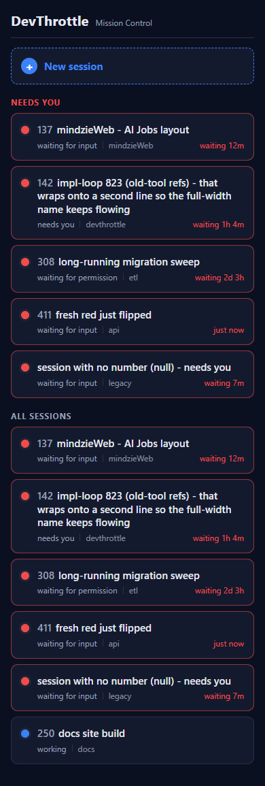
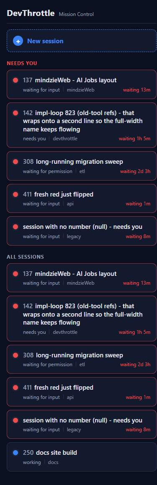

Developer Agent proof. Surface: mobile PWA (mobile/), served by the Gateway at /m.
Mobile-only; no backend/.NET contract change (SessionDto.Number #820 and SessionDto.NeedsYouSince #218 already exist).
Built on the merged #838 full-width-wrapping roster layout, which is preserved.
mobile/src/api/schema.ts predated #820 and was missing number;
it was regenerated with openapi-typescript (the tool npm run gen:api pins) from a current-main Gateway OpenAPI document, so SessionDto now carries number. See schema-regen.txt.mobile/src/pages/Home.tsx (SessionRow) renders session.number as a muted three-digit
span before the bold name (.row-num in mobile/src/styles.css), matching the desktop SessionRail .sess-num convention. A null number renders no prefix. The name still wraps full-width after it (#838).mobile/src/sessions/waiting.ts provides a pure waitingLabel(needsYouSince, now) formatter (ladder below) plus a useNow(1000) ticking hook. On needs-you cards only, SessionRow renders <WaitingTime> right-aligned on the status line (.row-waiting); it ticks once a second by recomputing from the held needsYouSince with no roster refetch. Working/other cards show no waiting time.Duration ladder: under 1 minute → just now; minutes → waiting 12m; hours → waiting 1h 4m; days → waiting 2d 3h.
The REAL built PWA (mobile/dist) was served through a harness that injects window.__GW_TOKEN__ exactly as the Gateway does and stubs /sessions with an authored roster - the issue's stated proof vehicle, the only way to backdate needsYouSince to minute/hour/day magnitudes and to present a null-number session. The real typed client (listSessions → fetch('/sessions') with the Bearer) and the real rendering are exercised unchanged. Captured at a phone-sized 390 x 844 viewport (Emulation.setDeviceMetricsOverride, deviceScaleFactor 2).
| # | Criterion | Expected | Actual | |
|---|---|---|---|---|
| AC1 | Three-digit number as muted prefix before the name; null number = no prefix | 137 mindzieWeb... with muted prefix; the null-number card shows the name with no prefix |
Cards 137/142/308/411/250 show the muted prefix; "session with no number (null)" shows no prefix (see roster-390px-t0.png) | PASS |
| AC2 | Number comes from session.number in the REGENERATED client and matches the /sessions payload |
Rendered number == payload number; schema.ts regenerated with number |
Rendered 137/142/308/411/250 == payload; schema.ts now has number?: null | number | string (see schema-regen.txt, sessions-bearer.txt) | PASS |
| AC3 | Needs-you card shows waiting <dur> from needsYouSince |
A session ~12 min ago shows waiting 12m |
Card 137 (needsYouSince 12m ago) renders waiting 12m, right-aligned | PASS |
| AC4 | Waiting time ticks live (increases) without a page reload | Value advances over time; no reload | Over a 63s wait with no navigation: 137 12m→13m, 142 1h 4m→1h 5m, 411 just now→waiting 1m, null-card 7m→8m (tick-before.png vs tick-after.png; performance.now confirmed no reload) | PASS |
| AC5 | Format ladder: <1m → just now; minutes; hours; days | just now / Xm / Xh Ym / Xd Yh |
411 just now; 137 waiting 12m; 142 waiting 1h 4m; 308 waiting 2d 3h | PASS |
| AC6 | Working/other cards show NO waiting time; status line stays status · repo |
Working card has no waiting text | Card 250 (working, blue) shows working · docs only - no waiting text | PASS |
| AC7 | #838 layout preserved; roster still loads from GET /sessions via the typed client with the Bearer |
Full-width wrapping name + prefix, repo under name, dot, grouping, attention styling, tap-to-open; Bearer attached | 142 wraps to 3 lines after its prefix; repo under the name; Needs you / All sessions groups; red attention borders; rows are tap links. App polled /sessions with Authorization: Bearer proof-bearer-844 (see sessions-bearer.txt) | PASS |


No drift. UI-only change in the mobile/ container; no architecture or security change, no new endpoint, no contract change (both fields already on SessionDto). A routine dotnet build cc-director.sln does not invoke npm.
mobile: npm run build (tsc --noEmit + vite build) -> built clean, schema number field typechecks .NET : dotnet build cc-director.sln -> Build succeeded. 0 Warning(s) 0 Error(s)
I believe this is finished.